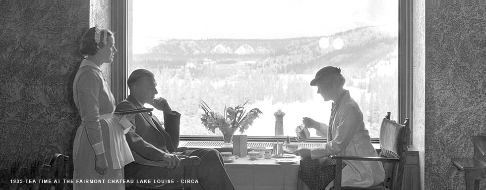

5160 S Pulaski, Chicago Il, 60632
5160 S Pulaski, Chicago Il, 60632
About Us

THE BIRTH OF THE BRAND
In 1907, history was made when The Fairmont San Francisco, Nob Hill's grand dame, opened its doors. The iconic hotel soon became the city's venue of choice for glittering balls, presidential visits and political gatherings, making the name Fairmont synonymous with “place of occasion”. With this auspicious beginning, the Fairmont Hotels & Resorts brand was born.
As the distinctive collection of hotels under the Fairmont banner grew, guests began to associate the Fairmont name with unrivaled properties, experiences which reflected their unique locations and warm, memorable service. Think of a landmark hotel around the globe and chances are it is a Fairmont property. Celebrated addresses in the Fairmont portfolio include The Fairmont Banff Springs, The Savoy in London, Quebec City’s Fairmont Le Château Frontenac, New York’s The Plaza, Nairobi’s Fairmont The Norfolk, Fairmont Peace Hotel in Shanghai and Makkah Clock Royal Tower, A Fairmont Hotel, among many others.
Fairmont hotels have hosted celebrities, royalty, politicos and artists for more than a century. Generations of the British Royal family have made Fairmont's properties their “home away from home.” Hotels have played both haven and muse to great talents like Claude Monet, who painted famous scenes of London from his room at The Savoy, playwright Noël Coward, who penned his work Private Lives while in residence at Shanghai's Fairmont Peace Hotel, and photographer Yousuf Karsh, who captured images of the 20th century's greatest figures from his studio at Fairmont Chateau Laurier in Ottawa. Hollywood A-listers have traveled to Fairmonts through the decades for rest and relaxation, as well as for memorable film work, and many of Fairmont's distinctive facades and interiors are recognizable on the silver screen.
Fairmont properties are home to history, playing a starring role in many moments that have held the world's attention. In 1945, the UN Charter was drafted in the Garden Room at The Fairmont San Francisco and signed by 50 countries. British Prime Minister Winston Churchill chose Fairmont Le Château Frontenac in Quebec City for his 1943 wartime meetings with Franklin D. Roosevelt and William Lyon Mackenzie to devise their plans for the Allied Forces’ campaigns overseas. Literary man-about-town Truman Capote hosted his star-studded Black and White Ball (later dubbed the “Party of the Century”) at The Plaza in 1966, welcoming guests like Katharine Graham and Frank Sinatra. John Lennon and Yoko Ono staged their Bed-In for Peace at Fairmont The Queen Elizabeth in Montreal in 1969, when the former Beatle penned the lyrics and recorded “Give Peace a Chance”, the song that became the anthem of the anti-war movement. And of course, who can forget that Tony Bennett first crooned the classic “I Left My Heart in San Francisco” for the first time in the Venetian Room, the famous nightclub in Fairmont's namesake hotel.
Many of Fairmont's iconic properties have been integral to the development of their communities' social fabric and identity. From countless weddings and debutante balls to ongoing events that were the highlight of local social life, like London's legendary Stompin' At The Savoy live music nights, and Sunday Afternoon Tea Dances at The Fairmont Copley Plaza in Boston, Fairmont hotels have always been the venue of choice for life's most significant milestones, and have played a cherished role in their communities' collective memory. Fairmont hotels have also served other functions in times of need. During World War II, The Fairmont Hamilton Princess in Bermuda was transformed into an outpost of the code-breaking headquarters of British intelligence, under Churchill's guidance and The Fairmont Sonoma Mission Inn & Spa, under Navy control, welcomed sailors and marines for some much needed rest. The Fairmont Royal York in Toronto even had a hospital on site for many years.
While historic events, famous visitors and lavish parties may garner the attention, equally meaningful to Fairmont are the personal, every day travel experiences that are unique and significant to each guest. Be it an exhilarating run down the pristine mountain slopes of Whistler, a relaxing yet energizing getaway at the Willow Stream Spa in Scottsdale, a round of golf in St Andrews, Scotland, or a self-guided tour by bike around the famed hutongs of Beijing, Fairmont offers more than a luxurious room, a grand lobby, or world-class dining. Fairmont properties offer a chance to create lasting memories.
In 1999, Fairmont joined forces with Canadian Pacific Hotels, creating a leading luxury hotel company that currently numbers over 60 properties in the world's most sought after destinations. Fairmont continues to be committed to growth, expanding its brand presence globally with a number of exciting hotel and mixed-use projects. With over a century of hospitality excellence to build on, Fairmont Hotels & Resorts looks forward to creating unforgettable and enriching experiences for years to come.